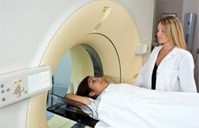
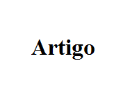

Notícias
Notícias

Hospital D. Manuel de Aguiar promove excelência inovadora em Imagiologia
O HDMA promove a abertura do seu renovado serviço de Imagiologia, onde poderá efectuar exames da mais variada ordem. em excelentes instalações, com acesso a tecnologia digital moderna e um atendimento humanizado e diferenciado. Agora o HDMA promove a abertura do seu renovado serviço de Imagiologia, onde poderá efectuar exames da mais variada ordem, em excelentes instalações, com acesso a tecnologia digital moderna e um atendimento humanizado e diferenciado. O serviço de Imagiologia do HDMA resulta da parceria entre a Santa Casa da Misericórdia de Leiria e o Grupo OGS – Organizações em Gestão de Equipamentos de Saúde, Lda., colocando ao seu dispor uma gama variada de oferta e nível de exames radiológicos tais como: Ressonância Magnética (1,5T), Tomografia Computorizada (TAC), Raios-x, Mamografia, Osteodensitometria, Ecografia geral e Eco-Doppler. Neste novo centro de Imagiologia Geral, poderá também usufruir dos diversos acordos vigentes com as respectivas entidades, nomeadamente: ARS, Seguros e outros ainda a designar. Centrado no atendimento dedicado e humanizado, o Serviço de Imagiologia do HDMA pretende assim destacar-se pela positiva, proporcionando excelência no diagnóstico e diferenciação na prestação global de cuidados de saúde. Bruno Carvalho, Médico
Artigo
Artigo
